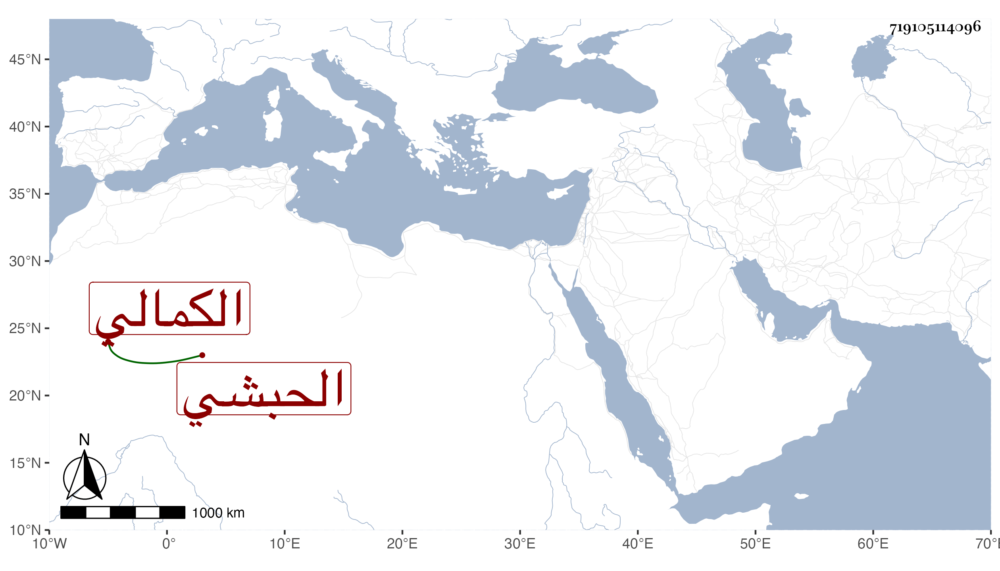

0902Sakhawi.DawLamic.ITO20230111-ara1.EIS1600.719105114096
Biography ID: 719105114096
931
ياقوت الحبشي الكمالي بن البارزي ، اختص بمولاه ثم بعده كان مع ابنة سيده ببيت الجمالي ناظر الخاص فقام بتربية بنيها سيما الكمالي ناظر الجيش ثم ولده بل هو المربي لغالب بني مولاه وحج ، وكان عاقلا دينا ساكنا محبا في الخير وأهله له بر وفضل في الجملة وهو ممن امتحن في أيام الأشرف قايتباي وأهين بالضرب ، ومات في ربيع الثاني سنة ست وتسعين عن سبعين سنة فأزيد .
